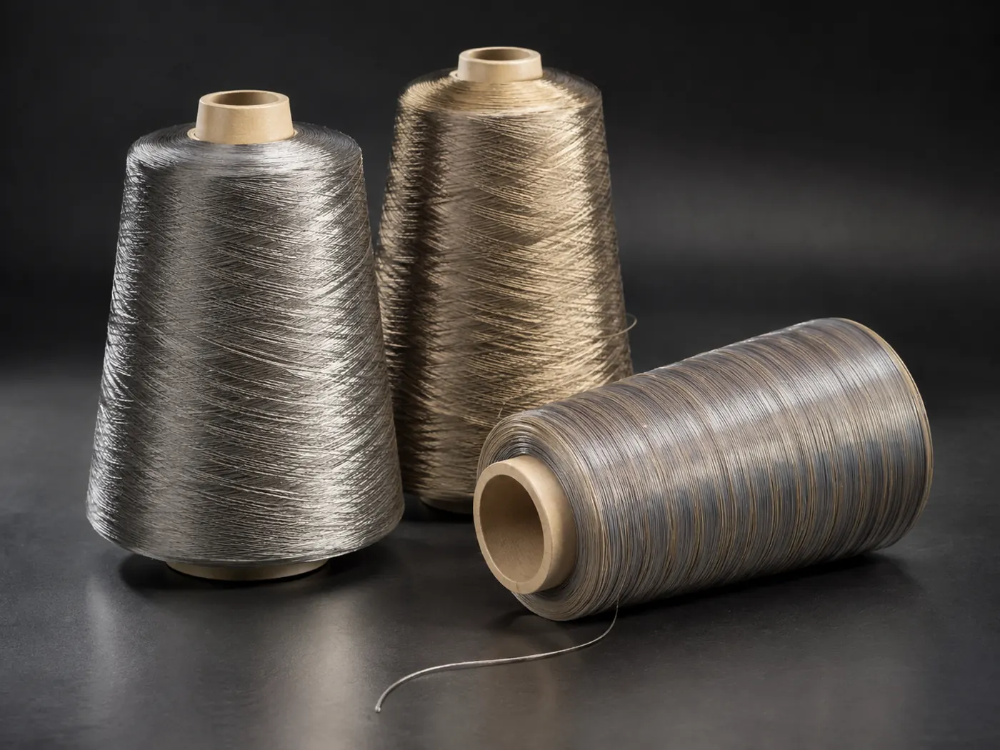
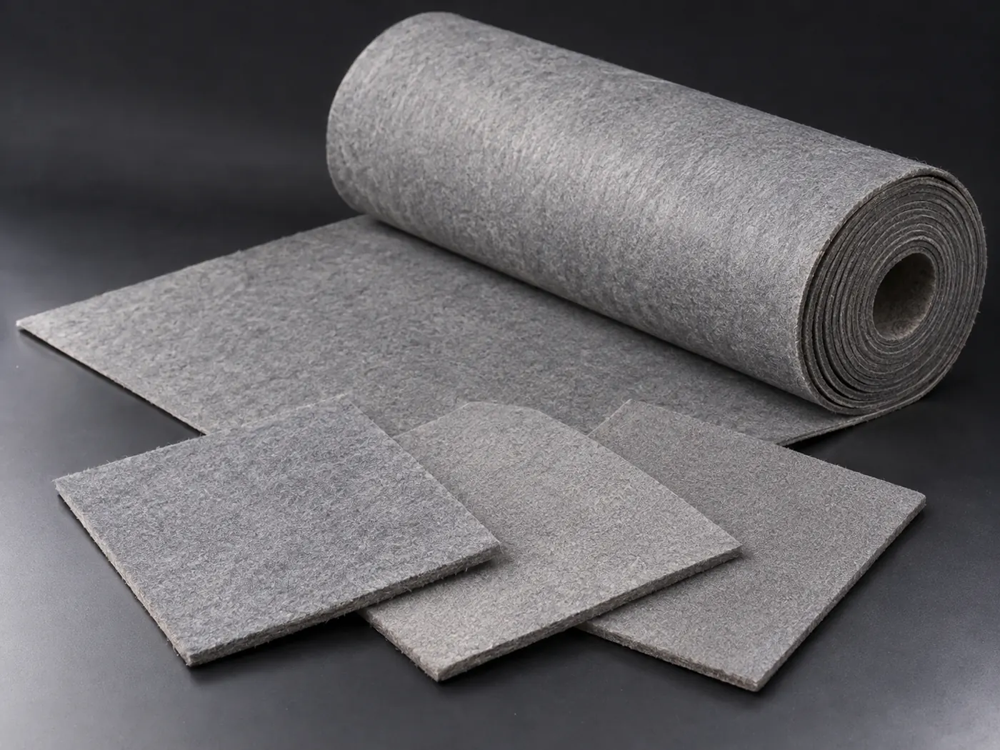
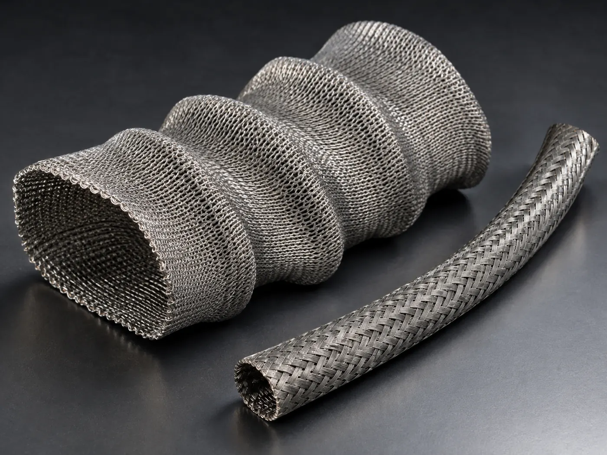
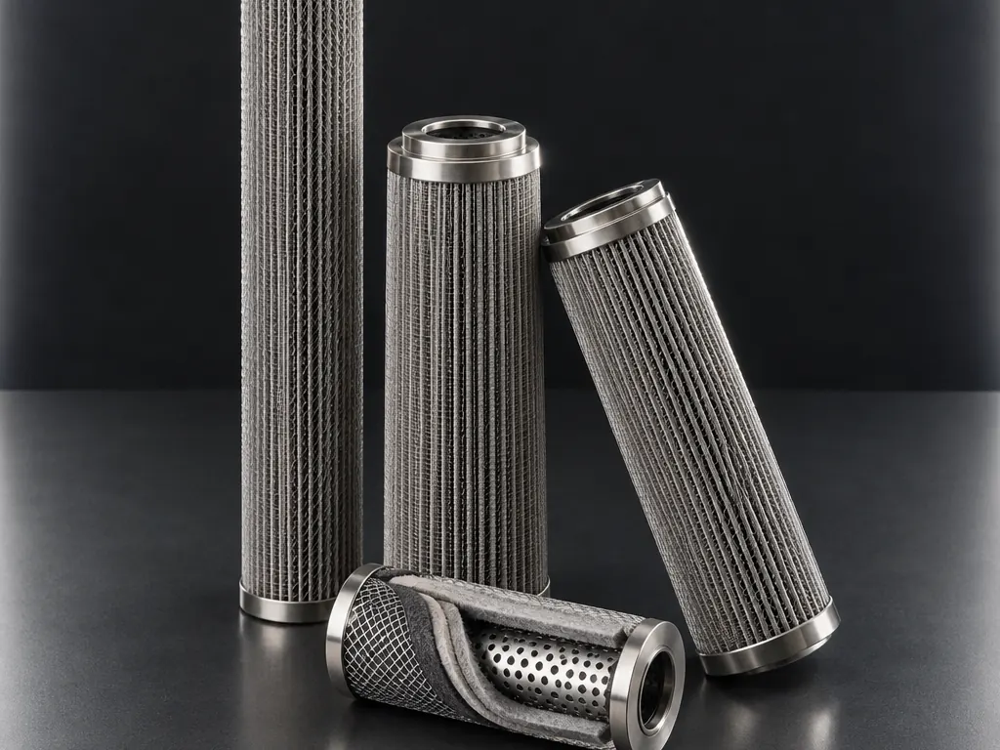
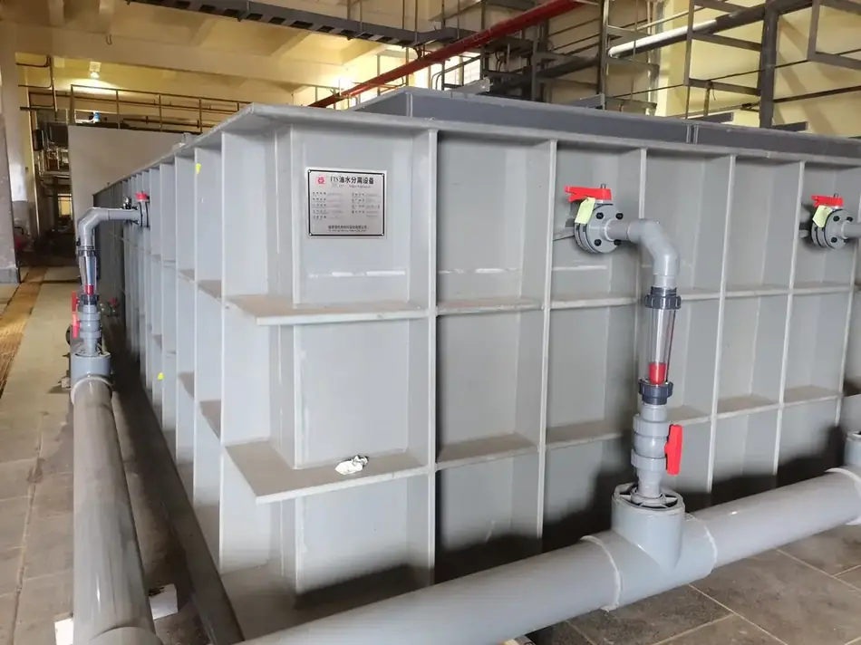

Choose by form, or tell us the duty
If you already know the form you need, start here. If you know only the temperature, the medium and the pressure, go to Applications — we will work back from the conditions.

Metal Fiber & Yarn
Bundle-drawn stainless steel fiber from 2 µm, in filament, chopped and tow form — and the pure, blended and insulated yarns spun from it.
- 2 µm monofilament
- 0.5–100% steel blends
- 1–64 Ω/m conductive thread

Sintered Felt & Media
Graded-pore metal fiber felt, 10–60 µm absolute at 72–86% porosity — depth filtration that can be cleaned and returned to service.
- 10–60 µm absolute
- 72–86% porosity
- 480 °C service

Technical Textiles & Sleeves
Knitted, braided and woven metal fiber: sleeves, cloth, tape and rope rated 350 °C continuous and 1100 °C short term.
- 350 °C continuous
- Φ5–60 mm sleeves
- 1500 mm cloth width

Filter Elements
Pleated cartridges, sintered mesh elements and high-temperature filter bags, built in house from our own media.
- 5–60 µm rating
- 30 MPa working pressure
- 425–1250 mm length

Oil Recovery Systems
Coalescing oil–water separation for extraction circuits — no demulsifier, no chemical sludge, and the organic phase goes back into the process.
- 600 m³/h largest unit
- ~70% oil removal
- 1–2 year payback
What each form is actually good at
Metal fiber is a platform material rather than a single product. This is the honest map of which form carries which property.
| Product form | Conductive | High temperature | Corrosion resistant | Porous / permeable | Flexible / weavable | Damping / acoustic |
|---|---|---|---|---|---|---|
| Fiber (filament, chopped, sliver) | ||||||
| Yarn & thread (pure, blended, insulated) | ||||||
| Textiles (sleeve, tape, cloth, rope) | ||||||
| Felt (sintered, needled, damping) | ||||||
| Panels (porous plate, burner sheet, sintered mesh) | ||||||
| Filter elements | ||||||
| Separation equipment |
Conditions first, material second
Send the operating conditions and we work back to the material: medium and its chemistry, temperature in service and at peak, pressure and differential pressure, flow, particle size and load, cycle and cleaning regime, and the space the part has to fit into.
We then propose one or two candidates, test them in our own laboratory, and send samples for a trial on your line. Specification follows the trial, not the other way round.
Conditions
You send the duty — medium, temperature, pressure, flow, particles, cycle.
Selection
We propose one or two candidate materials and explain the trade-off between them.
Laboratory test
Bubble point, permeability, efficiency and metallography, measured in house.
Sample trial
Samples on your line. No minimum order on most textile products.
Qualification
Small-batch validation, then series supply with lot inspection reports.
Send us your operating conditions, and we will send samples.
Temperature, medium, pressure, filtration rating, resistance or porosity — give us the numbers you work with and our engineers will recommend a configuration, quote it and arrange samples for your own testing.